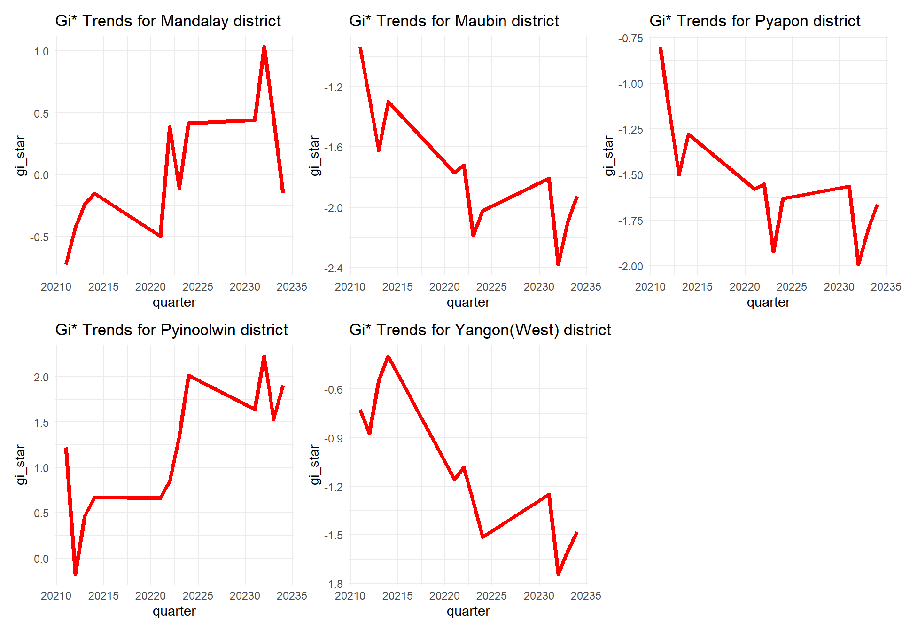
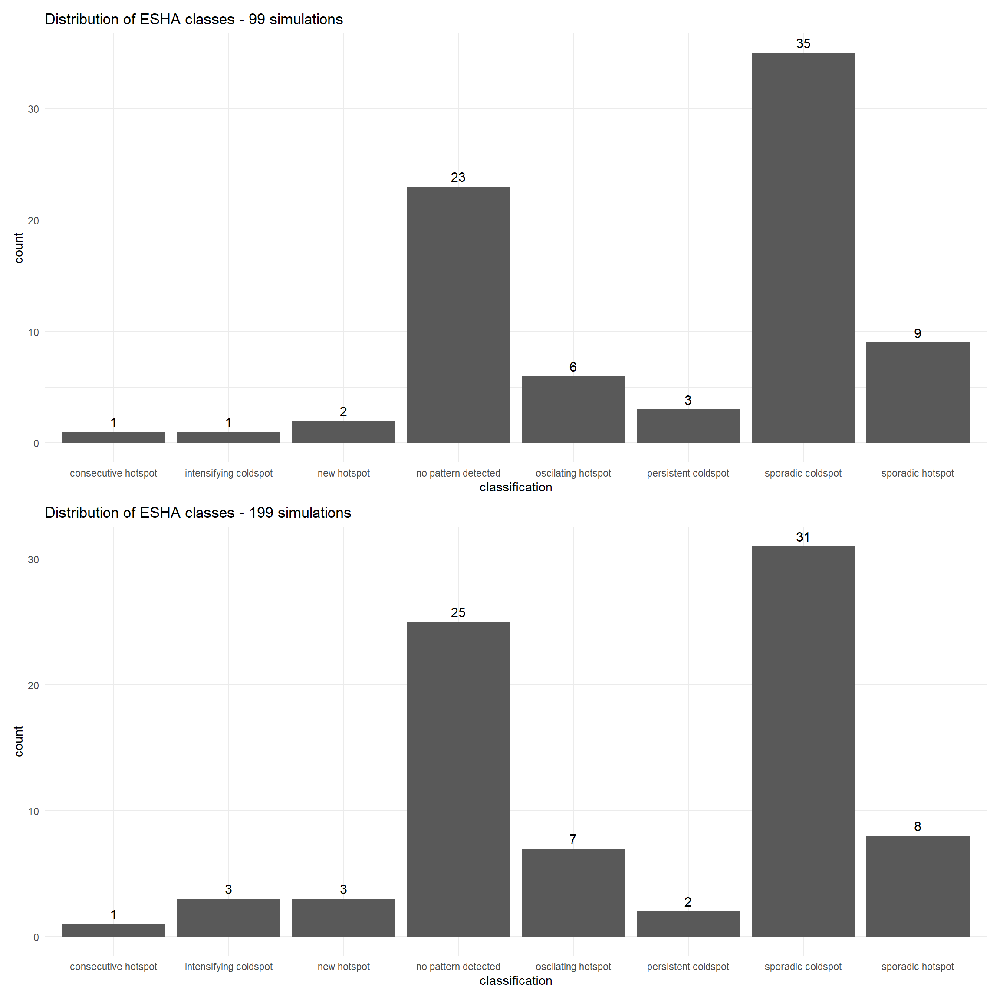
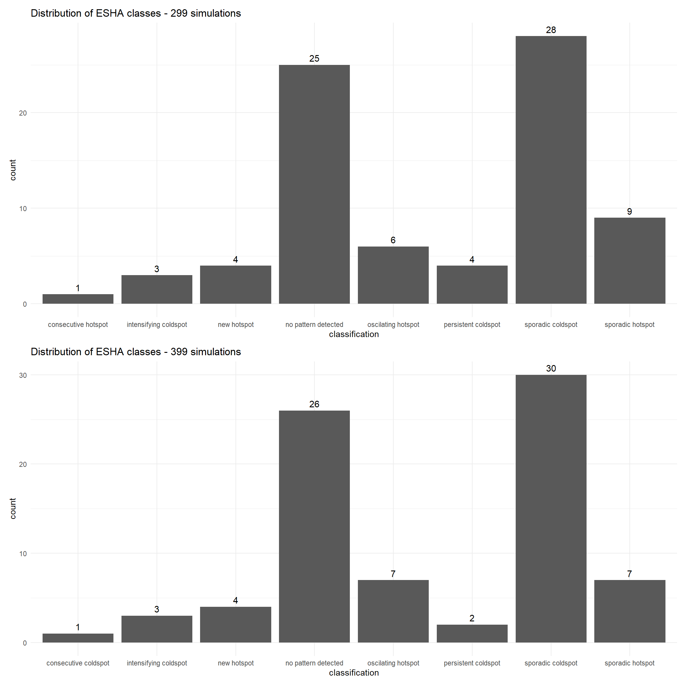
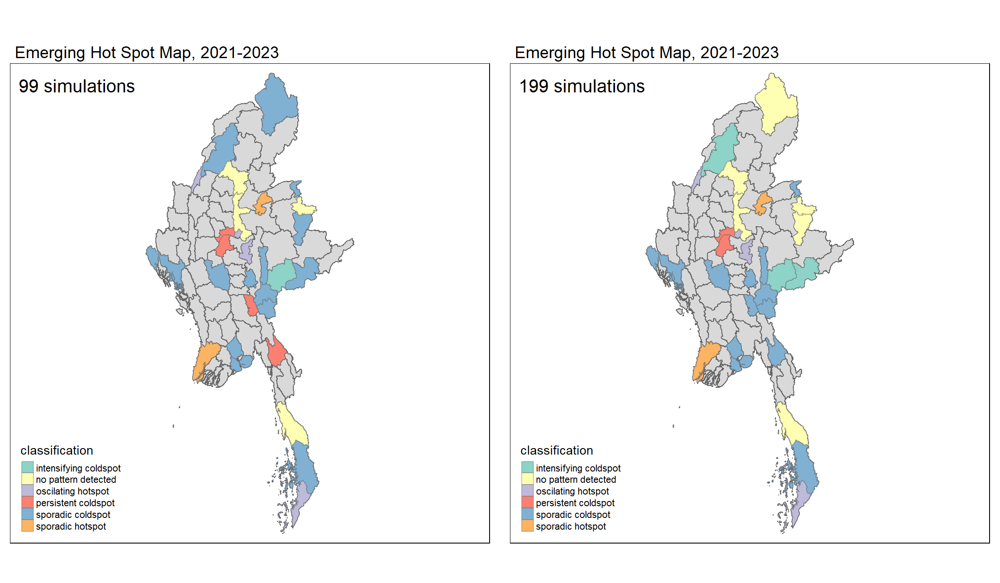
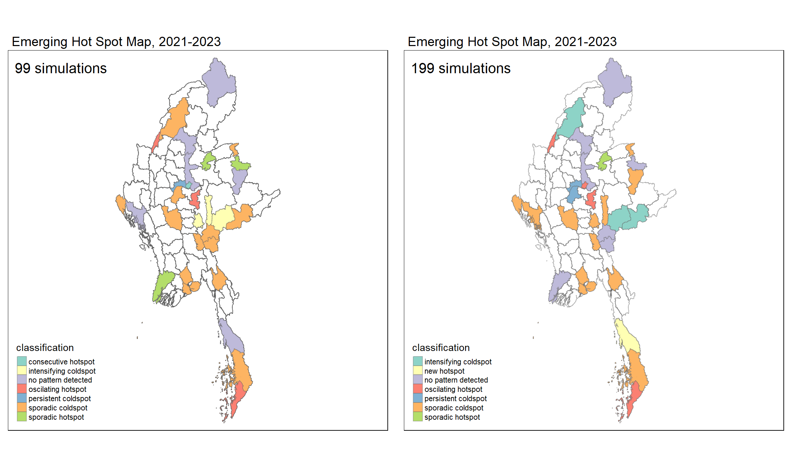

pacman::p_load(tidyverse, dplyr ,
sf, lubridate,plotly,
tmap, spdep, sfdep, patchwork, knitr)Take-home Exercise 4e - plotting for project poster
Emerging Hot Spot Analysis: sfdep methods
Data Loading and Prep
mmr_shp_mimu_2 <- st_read(dsn = "data/geospatial3",
layer = "mmr_polbnda_adm2_250k_mimu")Reading layer `mmr_polbnda_adm2_250k_mimu' from data source
`C:\imranmi\ISSS608-VAA\Take-home-ex\Take-home-Ex4e\data\geospatial3'
using driver `ESRI Shapefile'
Simple feature collection with 80 features and 7 fields
Geometry type: MULTIPOLYGON
Dimension: XY
Bounding box: xmin: 92.1721 ymin: 9.696844 xmax: 101.17 ymax: 28.54554
Geodetic CRS: WGS 84Data Wrangle for quarterly data
As per project requirements, we will sync the time frame for this analysis to be the same as our previous LISA analysis. Therefore, we will set up the data set to be for 2021-2023, and in quarterly periods
Events_2 <- read_csv("data/df1_complete.csv")Since this data set has been filled up for missing values, using tidyr::complete() , I can proceed to use the standard spacetime constructor ie spacetime()
First, loc_col identifier needs to be the same name for both data and shape file.
Event_type == Battles
Events_2 <- Events_2 %>%
filter(event_type == "Battles") %>%
rename(DT=admin2) %>%
select(-event_type, -year, -Fatalities) Quarterly_spt <- spacetime(Events_2, mmr_shp_mimu_2,
.loc_col = "DT",
.time_col = "quarter")is_spacetime_cube(Quarterly_spt)[1] TRUEComputing Gi*
Next, we will compute the local Gi* statistics.
Deriving the spatial weights
The code below will be used to identify neighbors and to derive an inverse distance weights.
Quarterly_nb <- Quarterly_spt %>%
activate("geometry") %>%
mutate(nb = include_self(st_contiguity(geometry)),
wt = st_inverse_distance(nb, geometry,
scale = 1,
alpha = 1),
.before = 1) %>%
set_nbs("nb") %>%
set_wts("wt")#for Quarterly admin 2
gi_stars3 <- Quarterly_nb %>%
group_by(quarter) %>%
mutate(gi_star = local_gstar_perm(
Incidents, nb, wt)) %>%
tidyr::unnest(gi_star)gi_stars3# A tibble: 960 × 15
# Groups: quarter [12]
quarter DT Incidents nb wt gi_star cluster e_gi var_gi std_dev
<dbl> <chr> <dbl> <lis> <lis> <dbl> <fct> <dbl> <dbl> <dbl>
1 20211 Hintha… 0 <int> <dbl> -0.938 Low 0.0101 1.70e-4 -0.776
2 20211 Labutta 0 <int> <dbl> -0.645 Low 0.00613 1.91e-4 -0.444
3 20211 Maubin 0 <int> <dbl> -0.938 Low 0.00945 1.42e-4 -0.795
4 20211 Myaung… 0 <int> <dbl> -0.801 Low 0.00825 1.83e-4 -0.610
5 20211 Pathein 0 <int> <dbl> -0.801 Low 0.00861 1.74e-4 -0.652
6 20211 Pyapon 0 <int> <dbl> -0.801 Low 0.00766 1.56e-4 -0.613
7 20211 Bago 1 <int> <dbl> 0.321 Low 0.0109 1.39e-4 0.501
8 20211 Taungoo 8 <int> <dbl> 0.432 High 0.0210 1.23e-4 -0.280
9 20211 Pyay 0 <int> <dbl> -0.337 Low 0.00906 1.74e-4 -0.105
10 20211 Thayar… 0 <int> <dbl> -0.270 Low 0.00926 1.78e-4 -0.0474
# ℹ 950 more rows
# ℹ 5 more variables: p_value <dbl>, p_sim <dbl>, p_folded_sim <dbl>,
# skewness <dbl>, kurtosis <dbl>Mann-Kendall Test
With these Gi* measures we can then evaluate each location for a trend using the Mann-Kendall test.
The code chunk below uses Hinthada region.
cbg3 <- gi_stars3 %>%
ungroup() %>%
filter(DT == "Hinthada") |>
select(DT, quarter, gi_star)Next, we plot the result by using ggplotly() of plotly package.
Hinthada district quarterly
p3 <- ggplot(data = cbg3,
aes(x = quarter,
y = gi_star)) +
geom_line() +
theme_light()
ggplotly(p3)Mann Kendall test for Hinthada district-quarterly
cbg3 %>%
summarise(mk = list(
unclass(
Kendall::MannKendall(gi_star)))) %>%
tidyr::unnest_wider(mk)# A tibble: 1 × 5
tau sl S D varS
<dbl> <dbl> <dbl> <dbl> <dbl>
1 -0.242 0.304 -16 66.0 213.Values of Mann Kendall test.
tau |
Kendall’s tau statistic |
sl |
two-sided p-value |
S |
Kendall Score |
D |
denominator, tau=S/D |
varS |
variance of S |
ehsa3 <- gi_stars3 %>%
group_by(DT) %>%
summarise(mk = list(
unclass(
Kendall::MannKendall(gi_star)))) %>%
tidyr::unnest_wider(mk)ehsa3# A tibble: 80 × 6
DT tau sl S D varS
<chr> <dbl> <dbl> <dbl> <dbl> <dbl>
1 Bago -0.0606 0.837 -4 66.0 213.
2 Bawlake -0.333 0.150 -22 66.0 213.
3 Bhamo -0.303 0.193 -20 66.0 213.
4 Danu Self-Administered Zone -0.394 0.0865 -26 66.0 213.
5 Dawei 0.515 0.0236 34 66.0 213.
6 Det Khi Na -0.212 0.373 -14 66.0 213.
7 Falam -0.333 0.150 -22 66.0 213.
8 Gangaw 0.121 0.631 8 66.0 213.
9 Hakha -0.0303 0.945 -2 66.0 213.
10 Hinthada -0.242 0.304 -16 66.0 213.
# ℹ 70 more rowsArrange to show significant emerging hot/cold spots
Admin 2 districts-quarterly
emerging3 <- ehsa3 %>%
arrange(sl, abs(tau)) %>%
slice(1:5)
print(emerging3)# A tibble: 5 × 6
DT tau sl S D varS
<chr> <dbl> <dbl> <dbl> <dbl> <dbl>
1 Mandalay 0.667 0.00319 44 66.0 213.
2 Maubin -0.667 0.00319 -44 66.0 213.
3 Pyapon -0.667 0.00319 -44 66.0 213.
4 Pyinoolwin 0.636 0.00493 42 66.0 213.
5 Yangon (West) -0.636 0.00493 -42 66.0 213.emerging3 <- ehsa3 %>%
arrange(sl, abs(tau)) %>%
slice(1:5)
# Print as a more formal table
kable(emerging3)| DT | tau | sl | S | D | varS |
|---|---|---|---|---|---|
| Mandalay | 0.6666666 | 0.0031919 | 44 | 66.00001 | 212.6667 |
| Maubin | -0.6666666 | 0.0031920 | -44 | 66.00001 | 212.6667 |
| Pyapon | -0.6666666 | 0.0031920 | -44 | 66.00001 | 212.6667 |
| Pyinoolwin | 0.6363636 | 0.0049314 | 42 | 66.00001 | 212.6667 |
| Yangon (West) | -0.6363636 | 0.0049315 | -42 | 66.00001 | 212.6667 |
Since above identifies the top five districts of emerging hot spots, we can also do a combined plot of their GI* trends over the 3 years
Show the code
cbg1st <- gi_stars3 %>%
ungroup() %>%
filter(DT == "Mandalay") |>
select(DT, quarter, gi_star)
cbg2nd <- gi_stars3 %>%
ungroup() %>%
filter(DT == "Maubin") |>
select(DT, quarter, gi_star)
cbg3rd <- gi_stars3 %>%
ungroup() %>%
filter(DT == "Pyapon") |>
select(DT, quarter, gi_star)
cbg4th <- gi_stars3 %>%
ungroup() %>%
filter(DT == "Pyinoolwin") |>
select(DT, quarter, gi_star)
cbg5th <- gi_stars3 %>%
ungroup() %>%
filter(DT == "Yangon (West)") |>
select(DT, quarter, gi_star)Show the code
p1 <- ggplot(data = cbg1st,
aes(x = quarter,
y = gi_star)) +
geom_line(colour = "red", size = 1.5) +
theme_minimal() +
ggtitle("Gi* Trends for Mandalay district")
p2 <- ggplot(data = cbg2nd,
aes(x = quarter,
y = gi_star)) +
geom_line(colour = "red", size = 1.5) +
theme_minimal() +
ggtitle("Gi* Trends for Maubin district")
p3 <- ggplot(data = cbg3rd,
aes(x = quarter,
y = gi_star)) +
geom_line(colour = "red", size = 1.5) +
theme_minimal() +
ggtitle("Gi* Trends for Pyapon district")
p4 <- ggplot(data = cbg4th,
aes(x = quarter,
y = gi_star)) +
geom_line(colour = "red", size = 1.5) +
theme_minimal() +
ggtitle("Gi* Trends for Pyinoolwin district")
p5 <- ggplot(data = cbg5th,
aes(x = quarter,
y = gi_star)) +
geom_line(colour = "red", size = 1.5) +
theme_minimal() +
ggtitle("Gi* Trends for Yangon(West) district")patchwork <- (p1+p2+p3+p4+p5)
patchwork
Performing Emerging Hotspot Analysis
We will perform EHSA analysis by using emerging_hotspot_analysis() of sfdep package. It takes a spacetime object x (i.e. spt1_complete, sp2_complete, quarterly_spt), and the quoted name of the variable of interest (i.e. Incidents) for .var argument.
The k argument is used to specify the number of time lags which is set to 1 by default.
Lastly, nsim map numbers of simulation to be performed.
Show the code
ehsa3_99 <- emerging_hotspot_analysis(
x = Quarterly_spt,
.var = "Incidents",
k = 1,
nsim = 99
)
ehsa3_199 <- emerging_hotspot_analysis(
x = Quarterly_spt,
.var = "Incidents",
k = 1,
nsim = 199
)
ehsa3_299 <- emerging_hotspot_analysis(
x = Quarterly_spt,
.var = "Incidents",
k = 1,
nsim = 299
)
ehsa3_399 <- emerging_hotspot_analysis(
x = Quarterly_spt,
.var = "Incidents",
k = 1,
nsim = 399
)
ehsa3_499 <- emerging_hotspot_analysis(
x = Quarterly_spt,
.var = "Incidents",
k = 1,
nsim = 499
)Visualising the distribution of EHSA classes
Admin2 districts - quarterly
Show the code
p6 <- ggplot(data = ehsa3_99,
aes(x = classification)) +
geom_bar() +
geom_text(stat = 'count', aes(label = ..count..), vjust = -0.5, size = 4, position = position_stack(vjust = 1)) +
labs(title = "Distribution of ESHA classes - 99 simulations") +
theme(plot.title = element_text(size = 20)) +
theme_minimal()
p7 <- ggplot(data = ehsa3_199,
aes(x = classification)) +
geom_bar() +
geom_text(stat = 'count', aes(label = ..count..), vjust = -0.5, size = 4, position = position_stack(vjust = 1)) +
labs(title = "Distribution of ESHA classes - 199 simulations") +
theme(plot.title = element_text(size = 20)) +
theme_minimal()
p8 <- ggplot(data = ehsa3_299,
aes(x = classification)) +
geom_bar() +
geom_text(stat = 'count', aes(label = ..count..), vjust = -0.5, size = 4, position = position_stack(vjust = 1)) +
labs(title = "Distribution of ESHA classes - 299 simulations") +
theme(plot.title = element_text(size = 20)) +
theme_minimal()
p9 <- ggplot(data = ehsa3_399,
aes(x = classification)) +
geom_bar() +
geom_text(stat = 'count', aes(label = ..count..), vjust = -0.5, size = 4, position = position_stack(vjust = 1)) +
labs(title = "Distribution of ESHA classes - 399 simulations") +
theme(plot.title = element_text(size = 20)) +
theme_minimal()
#p10 <- ggplot(data = ehsa3_499,
# aes(x = classification)) +
# geom_bar() +
# geom_text(stat = 'count', aes(label = ..count..), vjust = -0.5, size = 4, position = position_stack#(vjust = 1)) +
# labs(title = "Distribution of ESHA classes - 499 simulations") +
# theme(plot.title = element_text(size = 20)) +
# theme_minimal()patchwork2 <- p6/p7
patchwork2
patchwork3 <- p8/p9
patchwork3
Visualising EHSA
In this section, we will learn how to visualise the geographic distribution EHSA classes. However, before we can do so, we need to join mmr_shp_mimu2 & ehsa3) together by using the code chunk below.
Show the code
mmr_ehsa99 <- mmr_shp_mimu_2 %>%
left_join(ehsa3_99,
by = join_by(DT == location))
mmr_ehsa199 <- mmr_shp_mimu_2 %>%
left_join(ehsa3_199,
by = join_by(DT == location))
mmr_ehsa299 <- mmr_shp_mimu_2 %>%
left_join(ehsa3_299,
by = join_by(DT == location))
mmr_ehsa399 <- mmr_shp_mimu_2 %>%
left_join(ehsa3_399,
by = join_by(DT == location))filtering the significant p-values
Show the code
ehsa_sig99 <- mmr_ehsa99 %>%
filter(p_value < 0.05)
ehsa_sig199 <- mmr_ehsa199 %>%
filter(p_value < 0.05)
ehsa_sig299 <- mmr_ehsa299 %>%
filter(p_value < 0.05)
ehsa_sig399 <- mmr_ehsa399 %>%
filter(p_value < 0.05)Show the code
ehsa1 <- tm_shape(mmr_ehsa99) +
tm_polygons() +
tm_borders(alpha = 0.5) +
tm_shape(ehsa_sig99) +
tm_fill("classification") +
tm_borders(alpha = 0.4) +
tm_layout(main.title = "Emerging Hot Spot Map, 2021-2023",
title = "99 simulations",
main.title.size = 1.2,
legend.height = 0.60,
legend.width = 5.0,
legend.outside = FALSE,
legend.position = c("left", "bottom"))
ehsa2 <- tm_shape(mmr_ehsa199) +
tm_polygons() +
tm_borders(alpha = 0.5) +
tm_shape(ehsa_sig199) +
tm_fill("classification") +
tm_borders(alpha = 0.4) +
tm_layout(main.title = "Emerging Hot Spot Map, 2021-2023",
title = "199 simulations",
main.title.size = 1.2,
legend.height = 0.60,
legend.width = 5.0,
legend.outside = FALSE,
legend.position = c("left", "bottom"))
ehsa3 <- tm_shape(mmr_ehsa299) +
tm_polygons() +
tm_borders(alpha = 0.5) +
tm_shape(ehsa_sig299) +
tm_fill("classification") +
tm_borders(alpha = 0.4) +
tm_layout(main.title = "Emerging Hot Spot Map, 2021-2023",
title = "299 simulations",
main.title.size = 1.2,
legend.height = 0.60,
legend.width = 5.0,
legend.outside = FALSE,
legend.position = c("left", "bottom"))
ehsa4 <- tm_shape(mmr_ehsa399) +
tm_polygons() +
tm_borders(alpha = 0.5) +
tm_shape(ehsa_sig399) +
tm_fill("classification") +
tm_borders(alpha = 0.4) +
tm_layout(main.title = "Emerging Hot Spot Map, 2021-2023",
title = "399 simulations",
main.title.size = 1.2,
legend.height = 0.60,
legend.width = 5.0,
legend.outside = FALSE,
legend.position = c("left", "bottom"))tmap_arrange(ehsa1, ehsa2,
asp = 1,
ncol=2, nrow=1)
tmap_arrange(ehsa3, ehsa4,
asp = 1,
ncol=2, nrow=1)